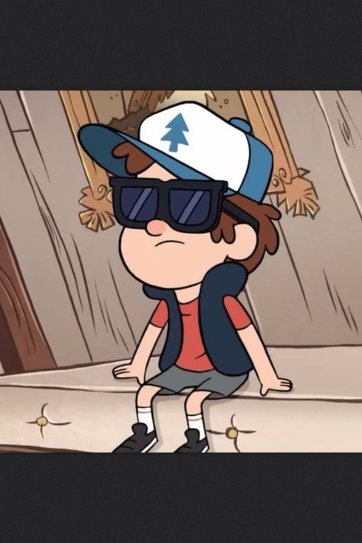
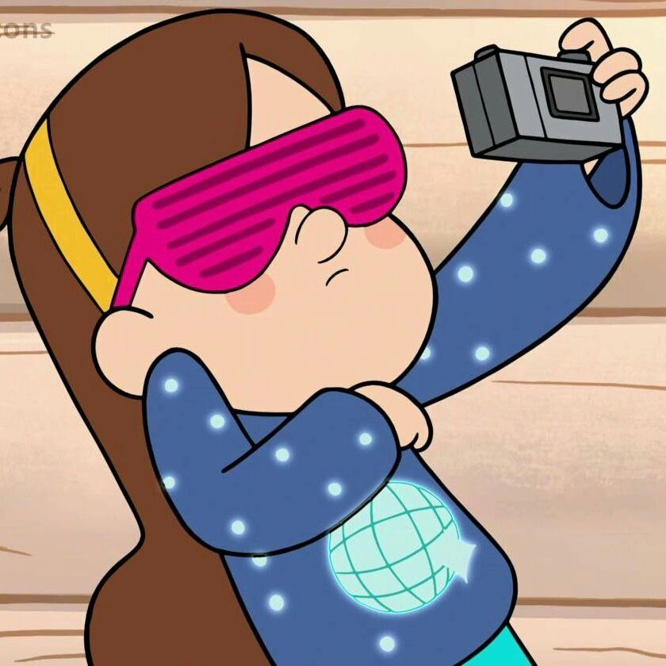
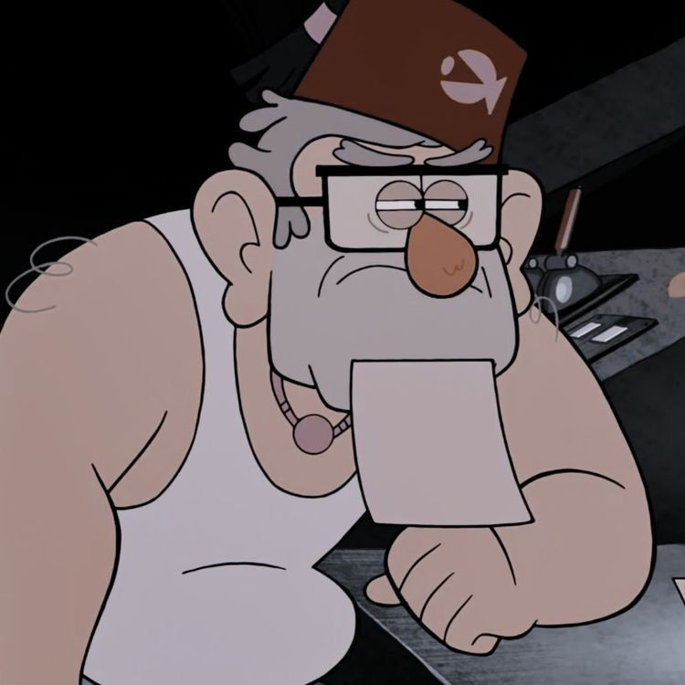
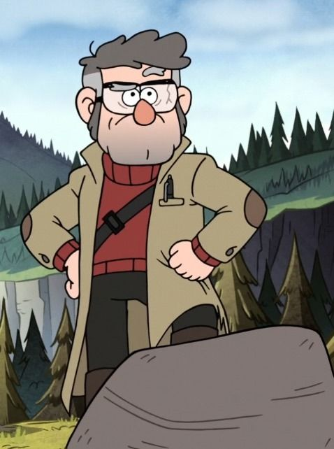
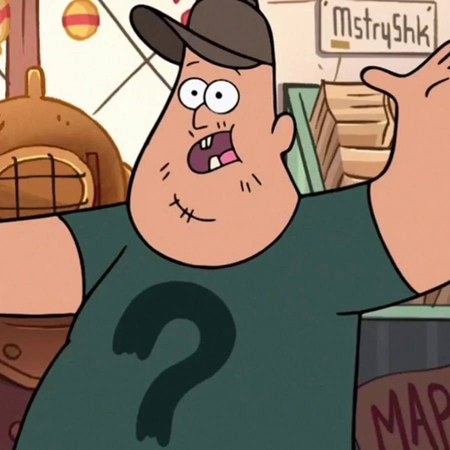
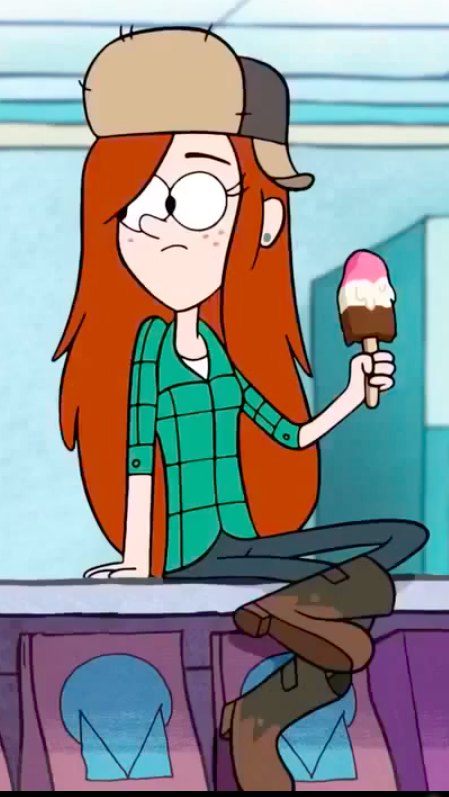
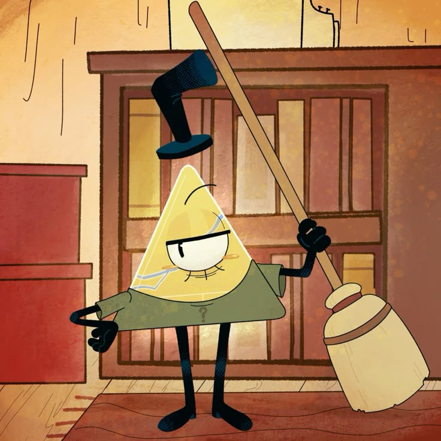

Персонажи Гравити Фолз
Познакомься со всеми удивительными и загадочными обитателями этого странного городка!

Диппер Пайнс
Мейсон "Диппер" Пайнс — 12-летний мальчик, проводящий лето со своей сестрой-близнецом Мейбл у своего двоюродного дедушки Стэна в Гравити Фолз. Любознательный, умный и одержимый разгадкой тайн городка. Носит синюю бейсболку с символом "Большой ковш", под которой скрывается родимое пятно в виде того же созвездия. Находит Дневник №3, который становится его руководством по исследованию паранормальных явлений Гравити Фолз.

Мейбл Пайнс
Мейбл Пайнс — жизнерадостная, эксцентричная и оптимистичная сестра-близнец Диппера. Ей 12 лет, и она обожает свитеры с необычными рисунками, единорогов, глиттер и всё радужное. Несмотря на свою легкомысленность, Мейбл обладает большим сердцем, творческими способностями и невероятной преданностью своей семье. Её девиз — "Всё будет здорово!", и она действительно верит в это.

Стэнли "Стэн" Пайнс
Стэнли Пайнс — жадный, циничный и вечно недовольный владелец туристической ловушки "Хижина Чудовищ". Под маской сварливого старика скрывается человек с трудной судьбой и большим сердцем. Провёл 30 лет, работая над возвращением своего брата-близнеца из другого измерения. Мастер афер и обмана, но глубоко внутри заботится о своей семье.

Стэнфорд "Форд" Пайнс
Стэнфорд Пайнс — гениальный учёный с шестью пальцами на каждой руке, автор трёх дневников о паранормальных явлениях Гравити Фолз. Провёл 30 лет в параллельных измерениях, изучая их природу. Обладает невероятным интеллектом, но часто бывает социально неловким. Построил портал в другое измерение, что привело к многим событиям сериала.

Зус Рамирес
Зус — 22-летний добродушный, немного наивный, но бесконечно преданный помощник в Хижине Чудовищ. Обожает видеоигры, сэндвичи и считает Стэна своим героем. Несмотря на свою неуклюжесть, он мастер на все руки и всегда готов помочь. В будущем становится новым мистером Загадочностью.

Венди Кордрой
Венди — 15-летняя крутая, независимая и саркастичная работница Хижины Чудовищ. Носит фланелевую рубашку и обожает приключения. Диппер в неё влюблён, но она видит в нём только младшего друга. Приходится из самой известной в городе семьи лесорубов.

Билл Шифр
Билл Шифр — древний межпространственный демон, стремящийся к полному уничтожению реальности. Появляется в виде гигантского глаза с цилиндром и галстуком-бабочкой. Обладает невероятной силой, манипулирует сознанием и заключает сделки. Главный антагонист сериала, устроивший Странногеддон.